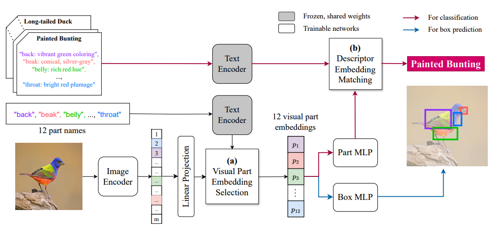

Tin (Kevin) Nguyen
I am a PhD student in Computer Science at
Auburn University, working with
Prof. Anh Totti Nguyen and Prof. Chirag Agarwal at UVA.
My research focuses on interpretable-by-design, agentic AI, and HCI.
Education
Experience
Honors & Awards
Publications my favorites () | others ()
Arxiv, 2026
PageGuide is a browser extension that acts as an in-page navigation agent: given a user's question, it locates the supporting evidence on the current webpage and highlights exactly where the answer comes from, instead of leaving the user to skim the whole page. We found that this agent improves the users verification up to 15%, post-survey questions show that users prefer evidence to verify agent's answer rather than plain text answers from non-grounding web agents (Claude Ext, Gemini Ext, etc).
TMLR, 2026
Also accepted at NeurIPS 2025 Workshop Multimodal Algorithmic Reasoning (MAR) —
Oral
HoT reformats an LLM's chain of thought so every claim is directly highlighted and linked back to the exact supporting facts in the input, using matched color-coded spans between the reasoning and the source text. This lets a reader quickly check whether the model's reasoning is actually grounded in the input rather than hallucinated, and the paper shows it improves both faithfulness and human trust compared to standard chain-of-thought prompting.
NAACL, 2024

NAACL, 2024 Findings
PEEB is a part-based, interpretable-by-design image classifier that predicts an object's class by first describing its visible parts in natural language (e.g., wing color, beak shape) and matching those descriptions against a text-conditioned part detector. Because the classification bottleneck is human-readable text, users can inspect exactly which part attributes drove a prediction and edit the class descriptions to correct or adapt the model without retraining.
KBS, 2023

Knowledge-based Systems (KBS), Jul 4, 2023
This work studies vision-and-language navigation in 3D environments built on VizDoom, where an agent must follow a natural-language instruction to reach a target location. The proposed coarse-to-fine fusion combines instruction and visual features at multiple stages, first aligning coarse landmarks mentioned in the instruction and then refining fine-grained action decisions, which improves navigation success over single-stage fusion baselines.
ICML, 2026
ICML, 2026
I contributed two tasks evaluating object counting and physical reasoning capabilities of video-language models.
KR Patent
Korean Patent No. 10-2979119 — Registered Jun 2026
Teaching
- Teaching Assistant for Formal Languages, Machine Learning, and Security at Auburn University
- Teaching Robotics for kids at K-6 AI Club at Auburn University
Academic Service
- Reviewer for ARR Rolling Review (ACL, EMNLP, NAACL), UIST, HAI, Knowledge-based Systems